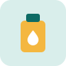

Coleta de óleo de cozinha
Pontos de coleta recebem óleo usado, que vira sabão e biocombustível, evitando que ele polua rios e redes de esgoto.
Veja o que cada ONG precisa agora, registre o que você pode doar e acompanhe até a ONG confirmar que recebeu.
Pesquise por item, categoria ou cidade e veja as necessidades urgentes de entidades verificadas.
Escolha o item, a quantidade e como entregar: levando até a ONG ou pedindo retirada no seu endereço.
A ONG aceita e confirma o recebimento. Você acompanha cada passo em Minhas doações.
Além das doações, apoiamos projetos que transformam resíduos em renda e cuidado com o ambiente.

Pontos de coleta recebem óleo usado, que vira sabão e biocombustível, evitando que ele polua rios e redes de esgoto.
Cooperativas de catadores separam e vendem os materiais, gerando renda para famílias e reduzindo o lixo enviado aos aterros.

Roupas em bom estado são higienizadas e entregues a quem precisa; as que não servem viram material para oficinas de costura.